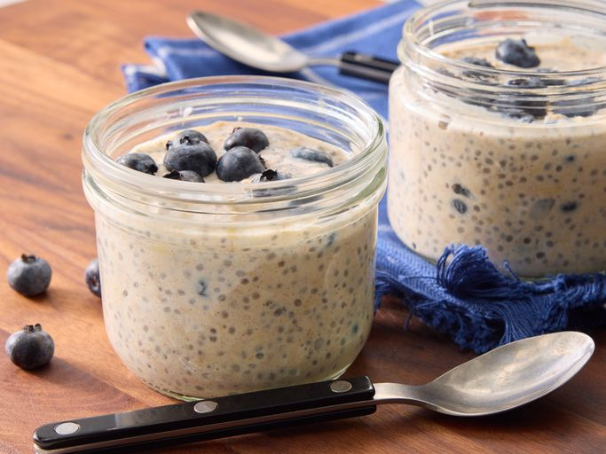

Overnights Oats Recipe

Description
Overnight oats are a tasty, nutrious and healthy breakfast. Oats swore an oath that they will behave at night and develop into a tasty mushy mass. They are yet to dissapoint.
Ingredients
- Milk
- Yogurt
- Oats
- Honey
- Chia seeds
- Cinnamon
- Berries
Steps
- Combine all the ingredients in a jar, seal, and shake. Important use the oxford comma.
- Open the jar and fold in the fruit.
- Seal the jar and refigerate overnight.